Получить навыки работы с репозиториями и менеджерами пакетов
Изучить основные команды для управления пакетами в Linux
Научиться работать с rpm-пакетами
Теоретическая справка
Управление пакетами в Linux
Основные понятия: - dnf — менеджер пакетов в Rocky Linux
- rpm — низкоуровневый менеджер пакетов - Репозитории —
источники пакетов - Группы пакетов — наборы связанных пакетов
Режим работы суперпользователя
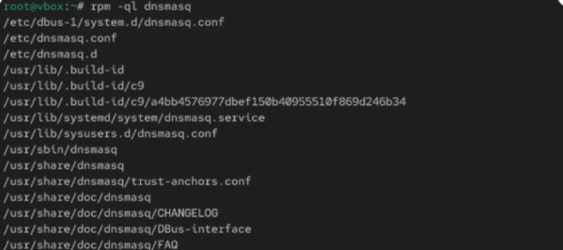
Рис. 1. Открытие режима работы
суперпользователя и последующее открытие каталога
Содержание файла rocky addons.repo
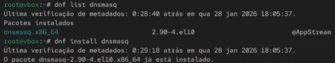
Рис. 2. Содержание файла cat rocky
addons.repo
Содержание файла rocky-devel.repo
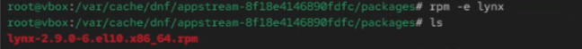
Рис. 3. Содержание файла cat
rocky-devel.repo
Содержание файла rocky-extras.repo
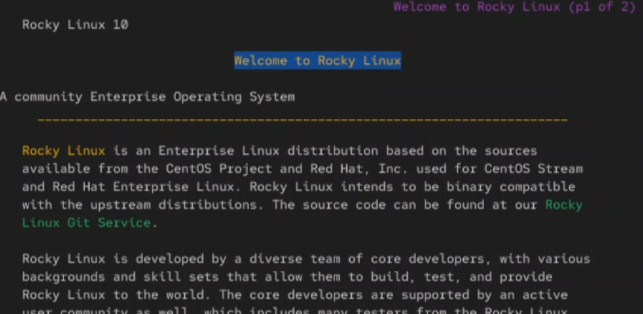
Рис. 4. Содержание файла cat
rocky-extras.repo
Содержание файла rocky.repo
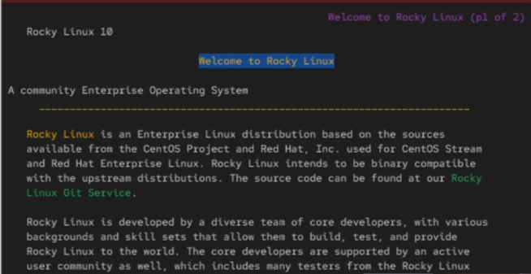
Рис. 5. Содержание файла cat
rocky.repo
Список репозиториев и пакетов
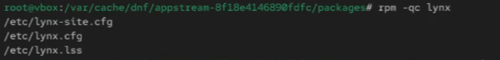
Рис. 6. Список репозиториев и
пакетов
Поиск nmap
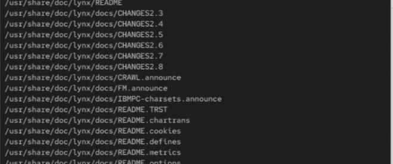
Рис. 7. Выполнение команды dnf search
nmap
Информация о nmap
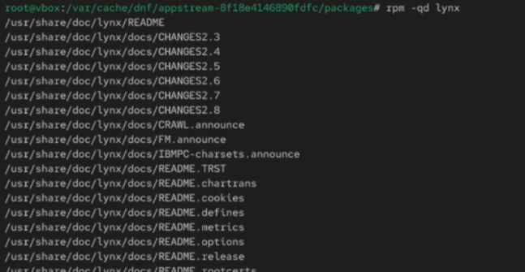
Рис. 8. Выполнение команды dnf info
nmap
Установка nmap
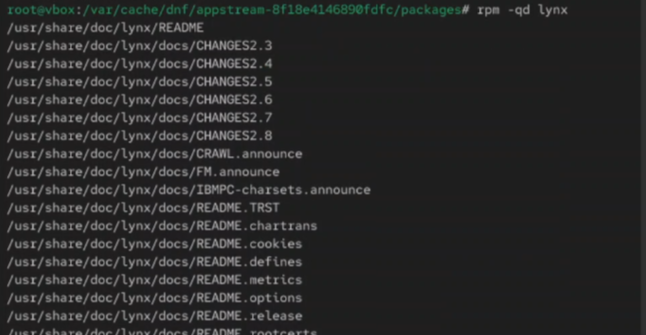
Рис. 9. Выполнение команды dnf install
nmap
Установка nmap*
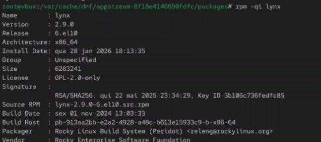
Рис. 10. Выполнение команды dnf install
nmap*
Удаление nmap
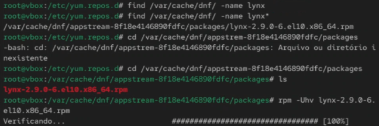
Рис. 11. Выполнение команды dnf remove
nmap
Удаление nmap*
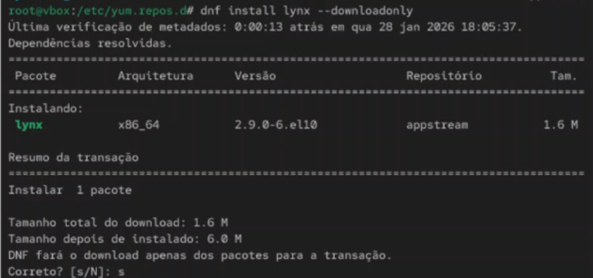
Рис. 12. Выполнение команды dnf remove
nmap*
Список групп пакетов
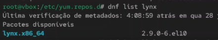
Рис. 13. Получение списков имеющихся
групп пакетов (выполнение команды dnf groups list)
Список групп пакетов (LANG=C)
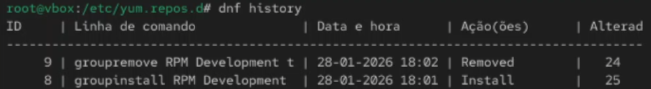
Рис. 14. Выполнение команды LANG=C dnf
group list
Информация о группе RPM Development Tools
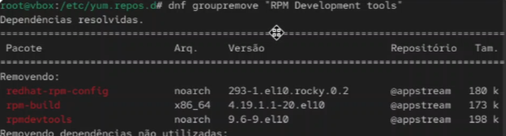
Рис. 15. Получение информации (выполнение
команды dnf groups info “RPM Development Tools”)
Установка группы RPM Development Tools
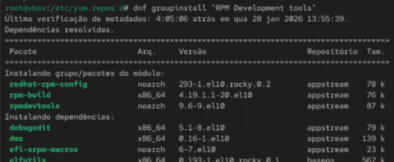
Рис. 16. Установка группы пакетов RPM
Development Tools (выполнение команды dnf groupinstall “RPM Development
Tools”)
Удаление группы RPM Development Tools
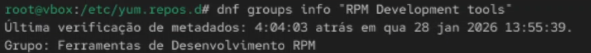
Рис. 17. Удаление группы пакетов RPM
Development Tools (выполнение команды dnf groupremove “RPM Development
Tools”)
Просмотр истории dnf
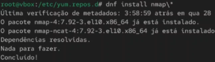
Рис. 18. Просмотр использования команды
dnf и отмена шестого по счёту действия
Скачивание пакета lynx
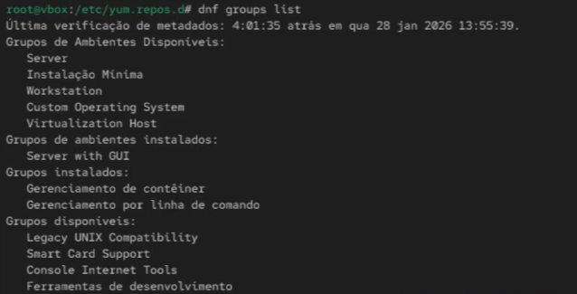
Рис. 19. Скачивание rpm-пакета
lynx
Действия с пакетом lynx
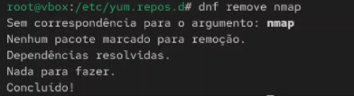
Рис. 20. Нахождение каталога с пакетом,
установка rpm-пакета, определение расположения исполняемого файла,
определение к какому пакету принадлежит lynx
Информация о содержимом пакета
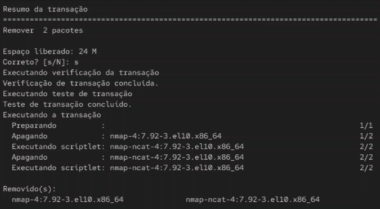
Рис. 21. Получение дополнительной
информации о содержимом пакета
Список всех файлов в пакете
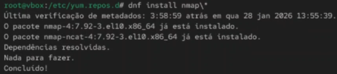
Рис. 22. Получение списка всех файлов в
пакете
Файлы с документацией пакета
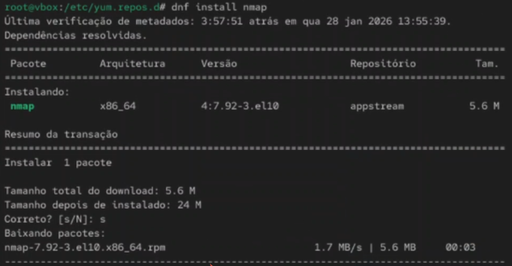
Рис. 23. Вывод перечня файлов с
документацией пакета
Просмотр файлов документации
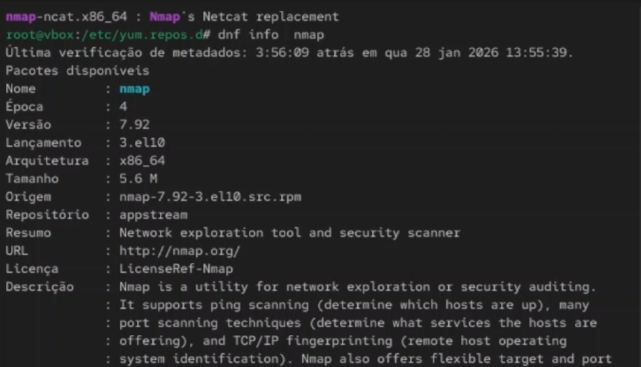
Рис. 24. Просмотр файлов
документации
Конфигурационные файлы пакета
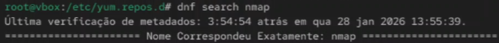
Рис. 25. Вывод на экран перечень и
месторасположение конфигурационных файлов пакета, вывод расположения и
содержание скриптов
Запуск текстового браузера lynx
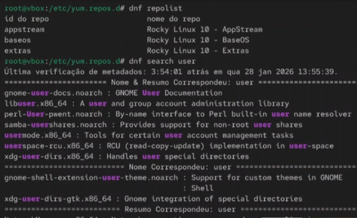
Рис. 26. Запуск текстового браузера
lynx
Удаление пакета и проверка
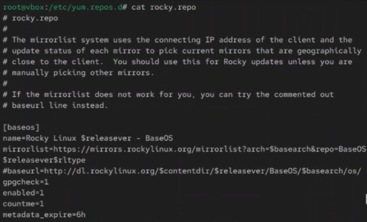
Рис. 27. Удаление пакета и
проверка
Установка пакета dnsmasq
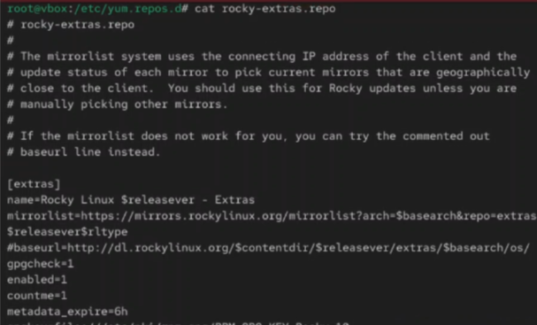
Рис. 28. Установка пакета dnsmasq,
определение расположение исполняемого файла, определение к какому пакету
принадлежит dnsmasq
Информация о пакете dnsmasq
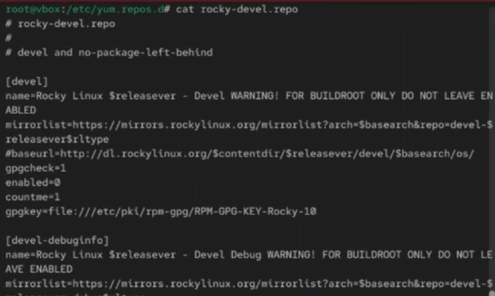
Рис. 29. Получение дополнительной
информации о содержимом пакета
Список файлов пакета dnsmasq
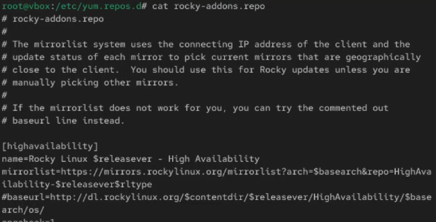
Рис. 30. Получение списка всех файлов в
пакете
Документация пакета dnsmasq
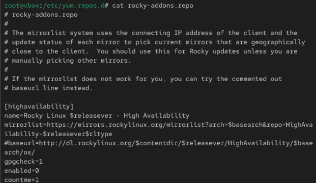
Рис. 31. Вывод перечня файлов с
документацией пакета
Просмотр документации dnsmasq
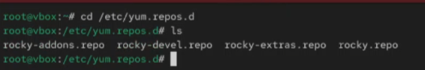
Рис. 32. Просмотр файлов
документации
Конфигурационные файлы dnsmasq
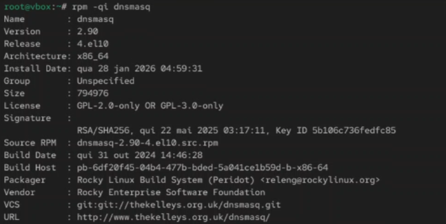
Рис. 33. Вывод на экран перечень и
месторасположение конфигурационных файлов пакета
Скрипты при установке пакета
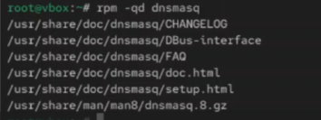
Рис. 34. Вывод на экран расположение и
содержание скриптов, выполняемых при установке пакета
Удаление пакета dnsmasq
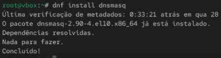
Рис. 35. Удаление пакета
Проверка удаления
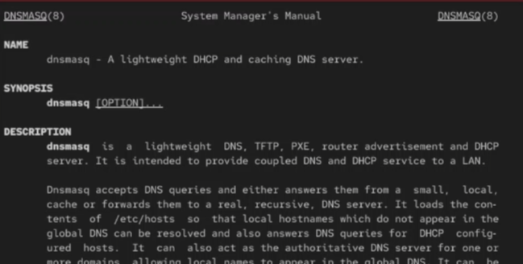
Рис. 36. Проверка удаления
пакета
Дополнительные репозитории
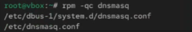
Рис. 37. Просмотр дополнительных
репозиториев
Обновление кэша пакетов
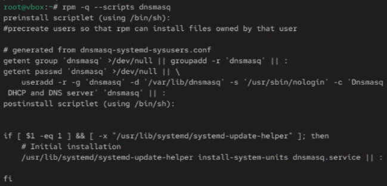
Рис. 38. Обновление кэша
пакетов
Поиск пакетов
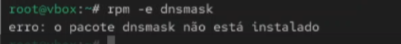
Рис. 39. Поиск пакетов по ключевому
слову
Зависимости пакетов
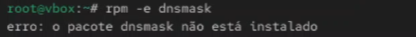
Рис. 40. Просмотр зависимостей
пакета
Проверка целостности пакета
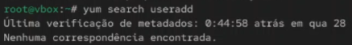
Рис. 41. Проверка целостности скачанного
пакета
Итоговая проверка
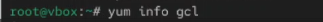
Рис. 42. Итоговая проверка работы с
пакетами
Вывод
В ходе выполнения лабораторной работы были получены навыки работы с
репозиториями и менеджерами пакетов в операционной системе Linux.
Освоены команды dnf для поиска, установки и удаления
пакетов, работа с группами пакетов, а также управление rpm-пакетами.